Chapter 5
How the Systems Fit
Waves and the Boot, the ley line, creature states, and the weight of the leash and its sigils, drawn out.
Coven Rush looks like a game about flying around a forest at night, and it is. Underneath, though, a handful of rule systems decide what happens in a run, and they lean on each other. The wave clock decides where the party goes next. The ley line shows the way and keeps time. Every creature's state decides who fights whom. The leash, and what it costs to drag an army about, decides how you play. This chapter goes through each one as the code has it now, mostly in src/rules/, which holds no drawing code at all. Along the way it shows how each changed over the four days, and why.
Waves and the Boot
The first rule was Ed's, on day one, and it was blunt: every 30 seconds, every area next to a partified one got a soundsystem. The party spread as a growing ring. That made one point of the design plain straight away. A circle growing in two dimensions soon gets too big for one witch to fly round. Then it narrowed. By build v149 each wave woke one area, chosen as soon as the one before had woken, so the player always knows where to go next (with more witches in the game, one area a wave for each witch). On 2026-10-04 Ed set the clock to five minutes a wave for now, noting that the final game's waves will probably be about a minute apart, about thirty of them.
The start took longest to get right. On 2026-10-05 Ed came back from a playtest with:
the game is hard! we should start each area with just one baby and have a boot up period of 5 minutesEd, 2026-10-05, playtest
So the home speakers' boot-up became five minutes #129, counted from her first step off the decks. Nothing grows and no wave comes during it, but the animals still attack. It is time to build an army and do quests before things get hard. A day later the boot was rebuilt three times in an afternoon. First the start became a spell: "you are standing behind your decks in your treehouse, there is a button on the screen that says "CAST THE PARTY SPELL"…" #270 #276. A few hours later that button became a parchment scroll with 🎶 on it, at the bottom right of the character creator, which grows, crackles and bursts when you click it #315. Second, the twelve speakers round the dancefloor began the game as small runestones. A pulse runs round them clockwise from the top, turning each into its speaker as it passes #272 #282. Third, after a playtest, the wait before anything happened got shorter:
The time between the game start and the first mini-runestone turning into a speaker should be about three seconds ... Three seconds after you leave your decks, that is ... You can start the boot time from when the first speaker is activated.Ed, 2026-10-06, playtest
That is bootPulseAt in rules/bootRing.ts #332. Once the spell is cast, the pulse waits at the treehouse until she leaves her decks (party.bootFrom). It runs down to the first stone in boot.firstAfter (3 s), then on round the ring to the twelfth over boot.time (300 s). The music hangs a new layer on each speaker as it turns #277. Then the first wave's 300-second countdown starts, so wave 1 lands about ten minutes after she gets up.
Each wave is spreadWave in rules/party.ts. The next area on the route (see the ley line, below) is partified and gets a soundsystem. Then stepFights in rules/game.ts starts its siege. The area's wild young and adults are enraged and march on the new soundsystem, which has 4,000 health (the home ring has 8,000). Its wild babies turn happy and come to dance (Ed, 2026-10-06). A soundsystem that falls is ruined: no wave ever wakes that area again. Its besiegers march on to the next-nearest soundsystem, and its happy babies run off home. A loss also brings the next wave closer. Ed's rule #101 was 60 seconds off the countdown for each loss, because "all waves sooner is the wrong kind of penalty": the waves after keep their full interval.

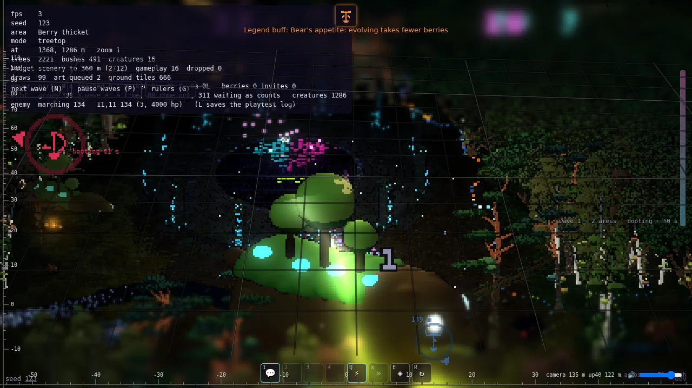

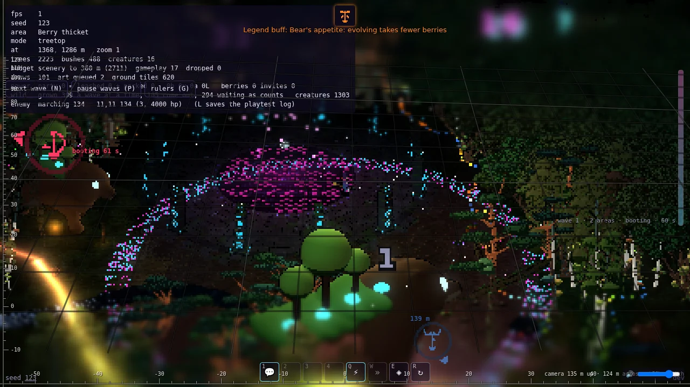
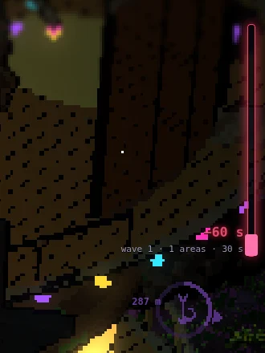
The HUD followed the redesign. On 2026-10-06 Ed asked for the wave timer bar and the cue toward the dancefloor to go, and for a game clock at the top in their place:
The wave timing indicator should point towards the leyline pulse. It no longer needs the symbol that indicates the upcoming rune; Instead it can have a 🎶 symbol. It keeps the wave countdown circle.Ed, 2026-10-06
The clock reads 00:00 until the spell, then counts up and stops when the game pauses #265. The 🎶 pointer stays hidden through the boot and fades in over 0.6 s as it ends (pointerShown).

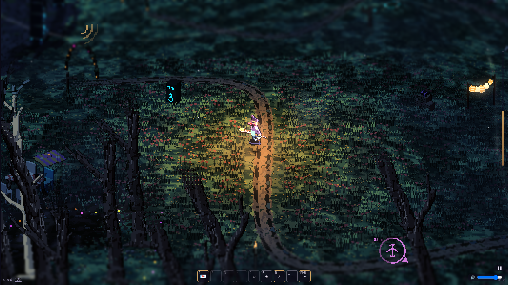

The Party's Over
A run used to end on a game-over screen. On 2026-10-06 it became an afterparty instead #323:
when the soundsystems and speakers are all destroyed, the dance music stops, the dancefloor switches off, lights switch off, the upset animals that ran away go home, all the animals go to sleep and make little 😴 speech bubbles, and you can walk the map safely.Ed, 2026-10-06
Once every soundsystem and the home ring's twelve speakers are down, startPartyOver sets g.partyOver, which eases in over six seconds. The waves stop for good and nothing fights. Her leash lets go, and every creature goes to sleep. Those she can see stroll home at twice their pace and lie down. The rest are simply in bed already, including the ones that ran off the map earlier (their records were kept). The lights go out in a ripple across the map #318, and the music winds down like a stopped record into each area's own night sounds #320.
The ley line
they essentially make a 2d game into a 1d game; you just follow them from objective to objectiveEd, 2026-10-05
The ley line is a glowing line on the ground through every area's runestone, in the order the waves will wake them. It arrived on 2026-10-04 as seven stones and six links #54: the last wave's stone, the current one, and the next few. On 2026-10-05 Ed moved the treehouse due north of the dancefloor, and the first link ran straight south across the floor #118. The window became six sections, the next three stones and the past three #137. Then on the morning of 2026-10-06 Ed asked for the whole route, all the time:
I think the leylines should cover the entire set of waves the whole time, but ideally it shouldn't cross itself, or try and minimise crossings.Ed, 2026-10-06
The waves had been picked one at a time by a "noisy" picker (cheapest by distance times a seeded wobble, so the party spread in lobes rather than a disc). Drawn end to end, its order crossed itself thousands of times. The fix was to plan the whole order once per map and then untangle it #248. Wherever two links crossed, the stones between them were reversed (the classic 2-opt move from route planning). Over 300 seeds that took the mean from 3,610 crossings a map to none, and the whole route from 227 km to 51 km. The waves now follow that plan: the default party.picker is "route".
The route's shape went through three versions in an afternoon. Ed first asked for more variety: "back-and-forth sweeps and lobes so maps aren't all spirals", with at most four crossings, none in the first 12 waves #284. That version was varied, but it went far from home too soon and stayed out. Then a mock-up of a spiral won him over: "This last example looks great!" #314. The route is now a spiral. The stones are split by distance from home into 5 to 7 rings, each ring is walked the same way round, and it zigzags in and out through 6 to 15 wedges, with a little lobe on about half the rings. It is untangled, and then a few crossings are put back on purpose.
The crossing rules changed with the spiral. "Not in the first 12 waves" gave way to a rule tied to the line itself: the pulse never passes over a crossing already drawn ahead of it. The drawn line's tip grows three links a wave (Ed: "The leyline can still travel three times faster than the pulse"), and the pulse moves one. If a later link crossed the pulse's current one while the pulse was still on it, the pulse would run over a line that had only just appeared. So links i < j may cross only if j ≥ 3(i + 1) + 1. The extra 1 is a link of margin. There are at most four crossings a map, at least 350 m apart (CROSSING_RULES). That means a crossing can come quite early, even on the first link out of home. Over 200 seeds, 87 maps had none and two had four, all within the rules.
The last fix was close to home. Ed's playtest of the evening of 2026-10-06:
The leyline shouldn't cross the dancefloor. After going around the speaker circle it should go off to the right and loop around to whatever direction it needs to go.Ed, 2026-10-06, playtest
So departureRoute (#329, rules/departure.ts) takes the first link from the treehouse's front round the outside of the speaker ring, depart.avoid (2 m) clear of it, on the first stone's side, and off to the right, looping on round the same way. The spiral always turns clockwise on the screen, so the route keeps going the way it left. overHome rejects any added crossing that would put a link over the floor. A late fix in #360 replans a route that dips far back toward home late in the run (more than 380 m), trying other ring counts.

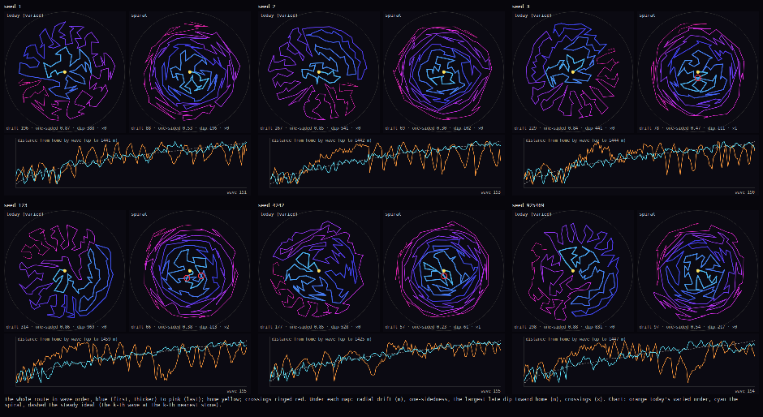

The pulse, the pointer and the beacons
The line also keeps time. Ed wanted the link to the next stone to "grow in intensity in proportion to how much time is left before the next wave; so you can see the pulse travel along the leyline" #269. In rules/leypulse.ts the pulse's place is simply the share of the countdown gone, measured along the link's arc length. It sits at the last stone just after a wave and reaches the next as the wave lands. The 🎶 pointer and the line's shader both read that one function, so they always agree. The drawn line's growing tip has a clock too. leyReachTimes puts the k-th stone along the route at bootUntil + k × interval / 3, so the tip reaches the third stone just as wave 1 lands. A runestone's column of light first appears, with a flare, when the tip reaches it #283:
The column of light above a runestone first appears when the leyline meets it. Remove the circle of magic symbols from around runestones.Ed, 2026-10-06
Those rings of symbols had been a "forecast", up to twelve glyphs round a stone counting down to its wave. The ley line had made them unnecessary. On the last night the line's look was still being worked on: a pull request with a pixel head for its front and a sketched line ahead of the pulse was open #351.
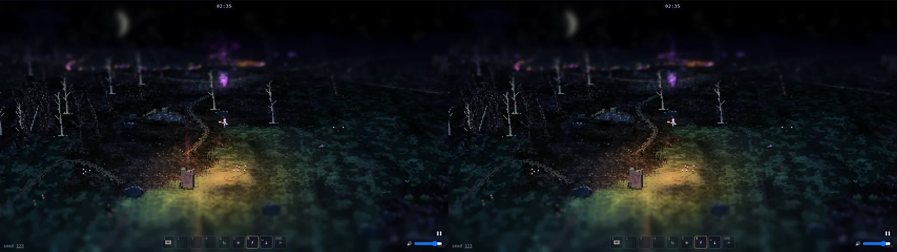
Creature states
Nobody is being killed in this game; we are throwing a party, we're inviting everyone, some people don't get invites and so are offended.Ed, 2026-10-05, issue #87
Fights came first, on 2026-10-04 (#44, #50, #57): wild creatures went for the witch on the ground in their area, and a beaten one ran off the map, visibly, and was gone. On the morning of 2026-10-05 Ed's issue #87 turned it into a party game with states. There are four of them, plus dazed, in rules/creatureStates.ts #96. A wild creature is as found. Happy means invited, and for good. Leashed means hers, and also for good. Enraged means a wave has put a soundsystem in its area. Who fights whom is a single function, foes(): leashed against wild and enraged, enraged against happy, and never its own kind, whatever the states.
The way into each state has been tuned more than anything else in the game. A 💌 that lands on an invitable creature fills its meter. It takes 4, 9 or 18 letters for a baby, young or adult (invites.hits), and since #289 every letter counts. A full meter makes it happy. Leashing it used to take a second meter. Ed approved a better idea on 2026-10-06 ("Great idea, do it!"): a happy creature drops its sigil as a rune at its feet, the rune moves with it, and she leashes it by standing by it and pressing E #294. That halved the time from wild to leashed. A baby went from 4.13 s to 2.28 s and an adult from 19.73 s to 10.15 s. A wild creature knocked down isn't out of it. It lies dazed for 20 seconds (Ed's round-13 call, #243), nothing attacks it, and she can still invite it. Otherwise it runs off home.
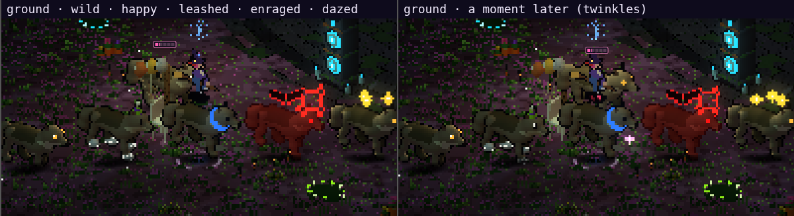
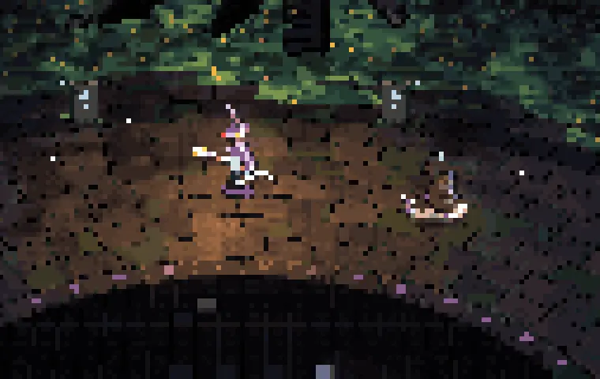
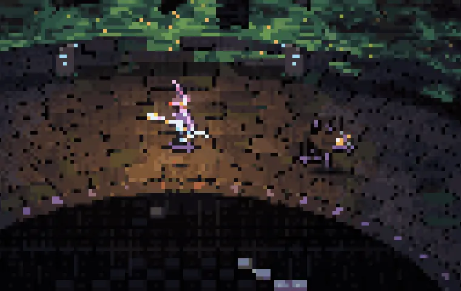
Legends
Every area has a legend of its kind, asleep for centuries, sunk and mossed over until it passes for a boulder. The first design (2026-10-04, #63) woke each one angry with its area's wave. The redesign under #87 #99 took that link away, so soundsystems no longer wake legends. Ed later wrote down what legends are for:
If you are quick and can do the quests you can get buffs from them; if you are lucky and find a relic they can be very powerful allies; and if you are losing, their babies get hurt during sieges and they get enragedEd, 2026-10-06, config/legends.json
A sleeping legend dreams of a creature: that is its quest. Put that creature's sigil down in its clearing while it sleeps and its buff is yours for good #259. It stays asleep only while one of its own kind lives in its area. It checks every five seconds, each legend on its own beat #278. With none of its kind there it grows restless, a nightmare, and after 60 s of that it is angry. It lobs and beams at her and her posse from up to 420 m away and, with her out of reach, at soundsystems instead ("Legend bombards, but prioritises you", #290). When one of its kind comes back it calms down; an angry one walks home first and lies down where it lay. A relic is one of six giant half-buried party bottles, one of each kind a map: one just inside home's edge, the rest at least 150 m apart #264. Put one down in a legend's clearing and the legend is happy, an ally that shoots the enraged. As an Easter egg, a hundred 💌s turn a happy legend into a party legend: "totally useless", in Ed's words #313.

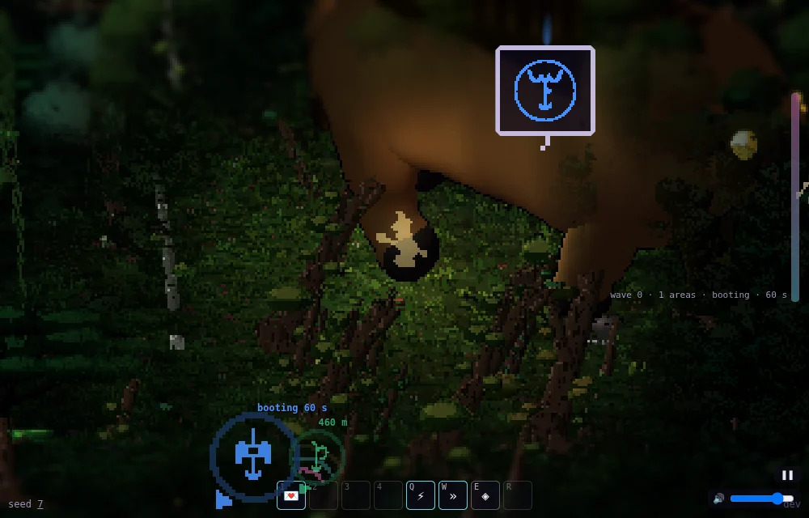

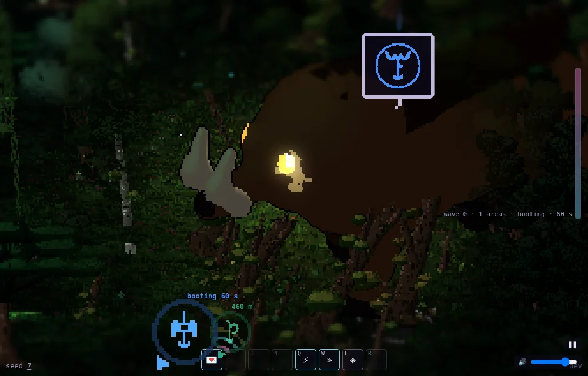

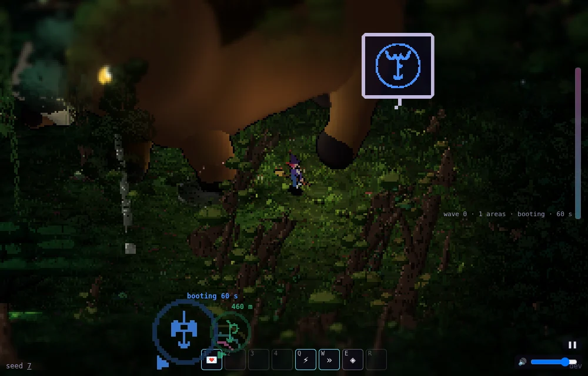

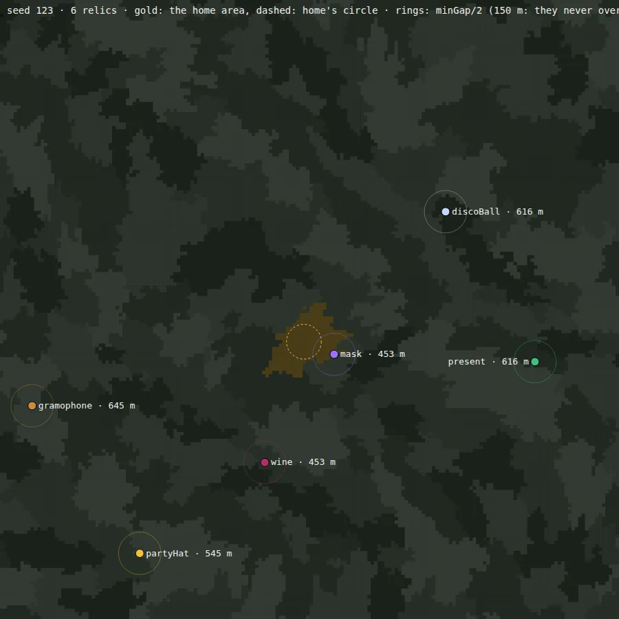

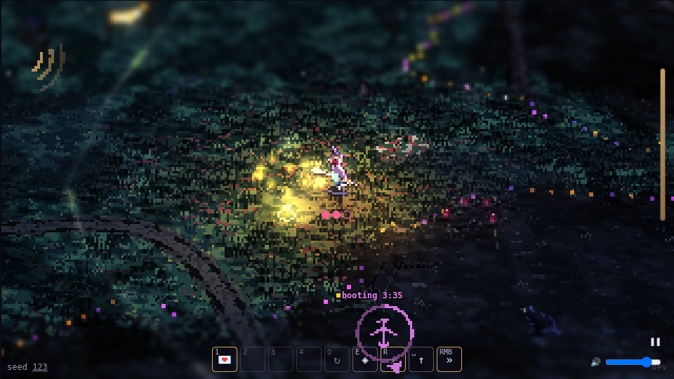
The leash, the sigils and their weight
Every creature she leashes adds its sigil to a stack above her head, newest at the bottom (rules/leash.ts). On the ground, E puts the bottom sigil down as a rune: a leash point. That creature then roams within 8 m of the rune (leash.length), and if it is further away it runs back at its own pace, never teleporting. E over one of her own runes picks it back up, and Q cycles the stack (Ed's remap of 2026-10-06). Sigils can't go down within 4 m of each other. This is the strategy layer: parking a few creatures by the next soundsystem before its wave.
Parked animals raised a problem: leashed creatures walking across the map to join her got into fights nobody was watching. Ed's ruling on 2026-10-05: "We probably don't want party animals getting into fights while they're just traversing the world when you're not looking" #91. So a party animal is in her posse within 60 m of her on the ground, or near its placed sigil. There it fights as usual, and it doesn't leave the posse until it is 1.4 times that far out, or while it has been in a fight within the last 4 s. Anywhere else it is travelling, and nothing on either side notices it. It walks a route planned along area borders, at least 50 m from every area's middle, at 1.4 times its leash pace, and its leash is drawn as that route.
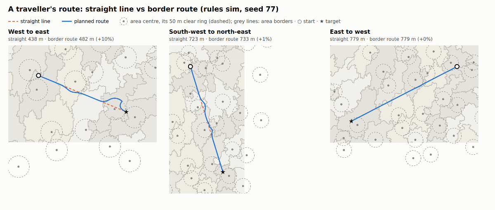
Sigil weight
One question was left: what stops a player growing a huge army and taking it everywhere? Rather than a cap on the stack, Ed's answer on 2026-10-06 was:
every sigil above your head pulls on you as well as attracting the animal; you find it slower to move in the opposite direction to where the leashes are, you are pulled off course, and rising to treetop is slower. And you're gradually pulled back down. This stops you just growing a giant army and pulling it around with you everywhere steamrolling everything. We can make the mechanic obvious through the artwork.Ed, 2026-10-06
The rules came in #299, as rules/leashWeight.ts. Each sigil in her stack pulls her toward its creature by how taut its leash is times the creature's weight. Sigils on the ground weigh nothing. Tautness is 0 while the creature is within 0.85 of the leash length and rises to a cap a leash length further, so a creature that has fallen far behind can't pin her just by being far away. The weight goes by level: baby 0.5, young 1, adult 2, legend 3, times the species' strength. Weighting by level × strength alone would have made a baby weigh nothing, so the table was flagged for Ed as a decision. The pulls add up as a vector, and the first 2.5 units are free, so the first few sigils change nothing. Anything over that is her load:
| Her load (pull − 2.5) does this | Knob |
|---|---|
| Moving away from the pull, that part of her speed is divided by 1 + 0.35 × load. Her steering still works. | drag |
| She drifts toward the pull, up to 12% of her top speed at an extreme load (8). | drift, extreme |
| Rising to the treetops takes 1 + 0.3 × load times as long. | rise |
| Over the treetops she sinks by 0.05 × load of the climb a second (at most 0.12). While she flies on she stops sinking just over the crowns (0.75), so she is never dropped into a fight she didn't choose. If she stops, or the load is extreme, she sinks all the way and lands. | sink, sinkMax, floor |
The look came in alongside #298. Under load the stack sags and leans toward the pull, the threads go taut and bright, she leans forward with her broom bowing, and sparks fall away below her as she sinks. Slack leashes got a higher curve the same afternoon, flattening as they go taut ("The curve on slack leashes should be higher than it is now", #300). From the treetops, leashed and happy creatures now show their sigils above the canopy, so she can find her party from the air #328.
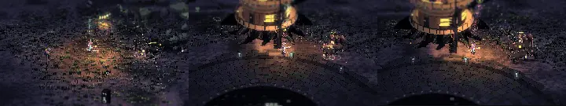
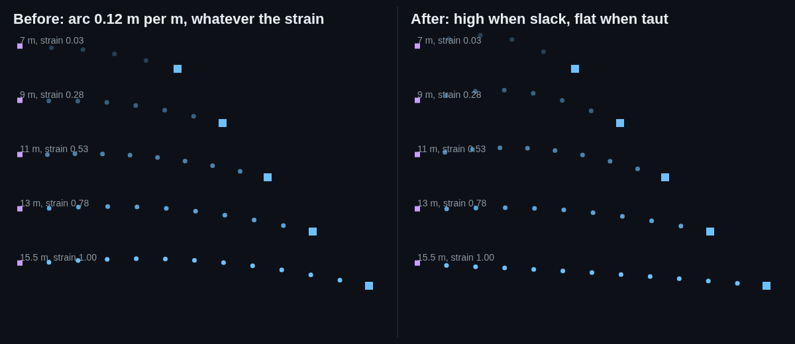
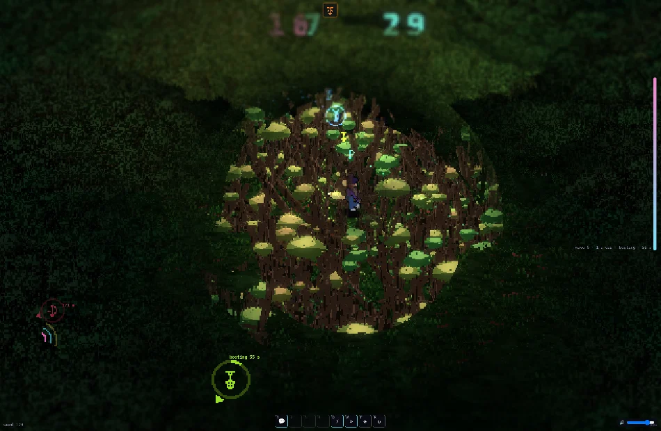
Combat, knockout and the dropped hat
Combat, in rules/combat.ts with its attacks as data in config/combat.json, began as "Stage 4" on 2026-10-04 #44. It runs in fixed 1/60 s steps from the inputs and the seed alone, and the same inputs always give the same game. Stage 5 gave every species readable movement and its own signature moves #58 #74. The witch takes three hits, whatever hits her, and gets one back every 20 s out of the fight. Since a balance pass there are 0.5 s of grace after a hit, so a pack striking together lands once. Blows knock her back, the boar's hardest #108. Some legends make one long, slow charge #114. In round 13 charges and leaps went twice as far, curving in wide arcs #243.
At no hits left she is knocked out. The rules here changed on 2026-10-05. Before, a knockout let go of every creature on her leash; the design's advice was to park your army before you scout (2026-10-04). Since #87 leashed is for good: her stack comes down one sigil a second, each put down where its animal stands, so they stay hers as a parked group #96. Then she sparkles out and back in behind her decks: "as when the game begins (but not zoomed in)". Last came the hat #285:
… you drop your hat, and there's a direction marker for it, so you can go back and find it. You pick it up like a sigil, at which point it gets put back on (you can't put it down, it doesn't appear in the sigil stack). If it's on top of a sigil, you pick the hat up first. The purpose of this is to help you not lose fights that you might be in.Ed, 2026-10-06
rules/hat.ts is forty lines. A 🎩 pointer leads back to the hat, and E puts it on before anything else under her. A witch who chose no hat in the creator simply doesn't have the mechanic. What happens if she is knocked out again while the hat is still down was left as a decision for Ed: for now nothing more drops.
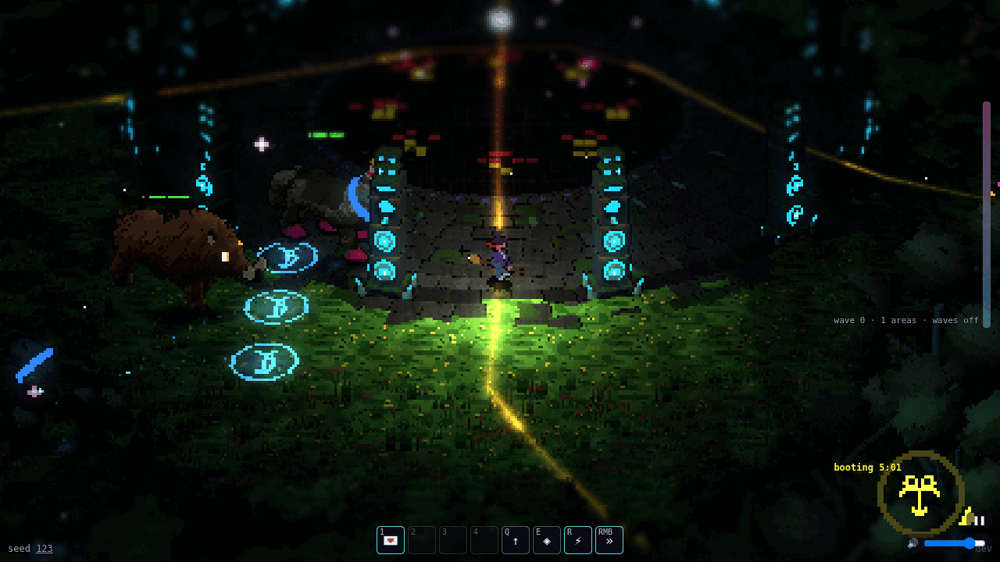
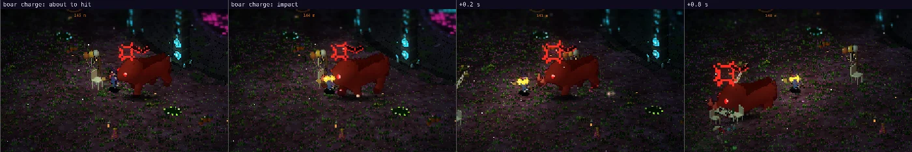
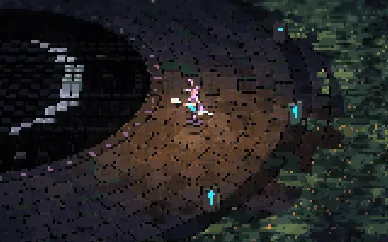
More pictures

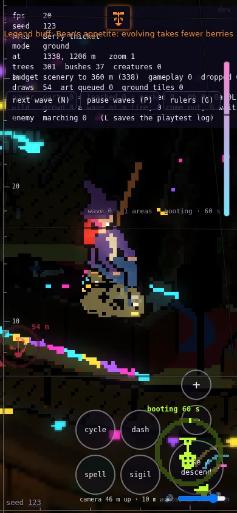

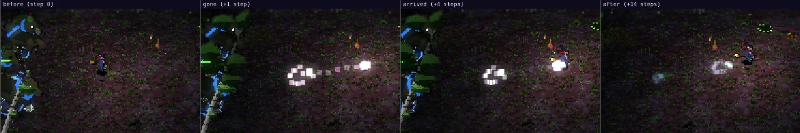

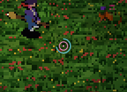

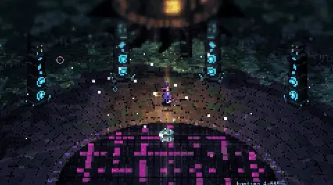

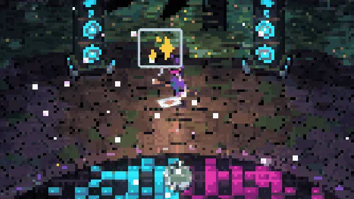

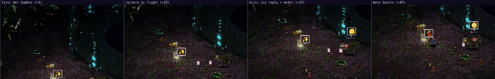

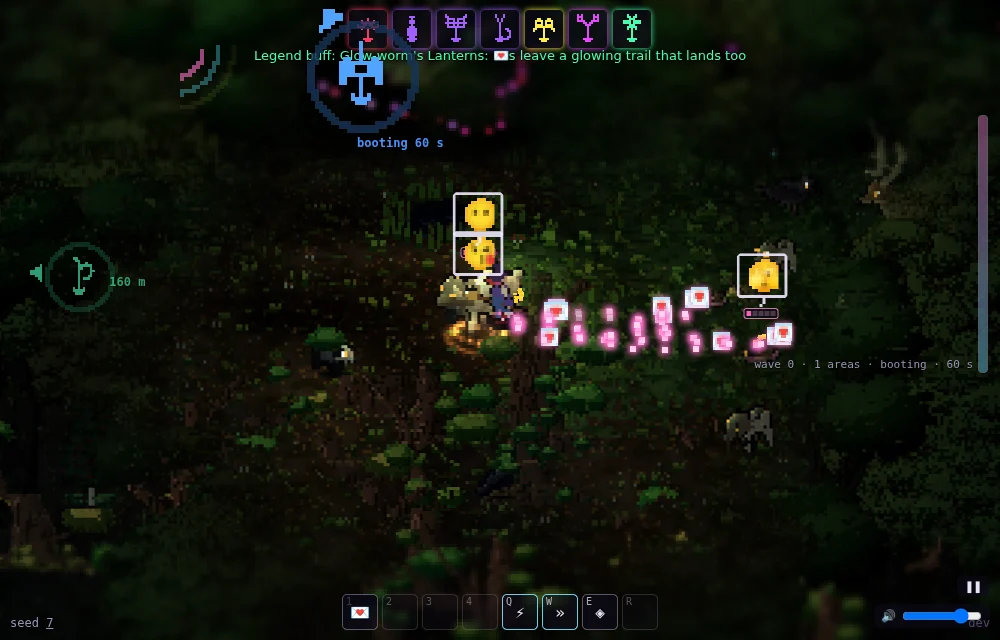

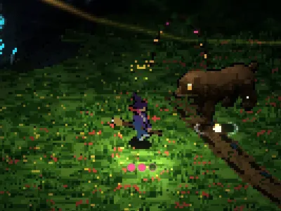

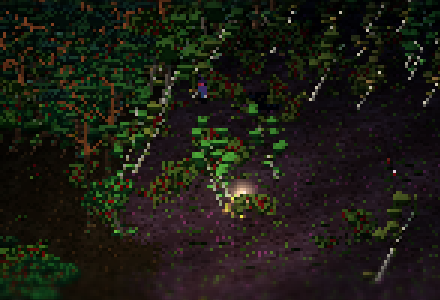

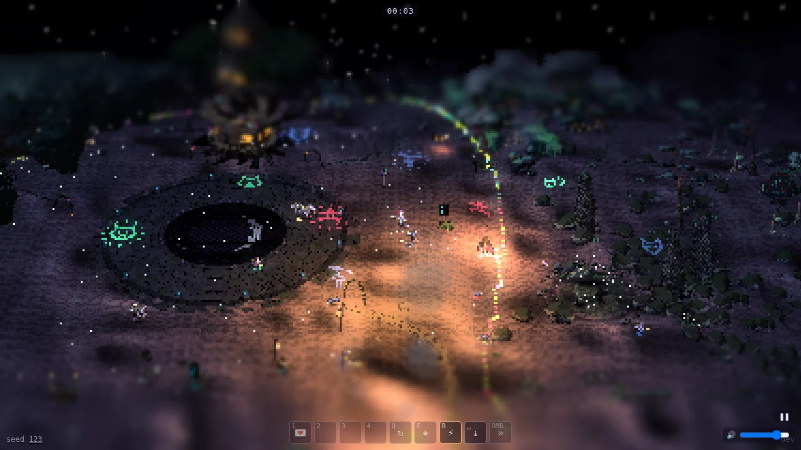

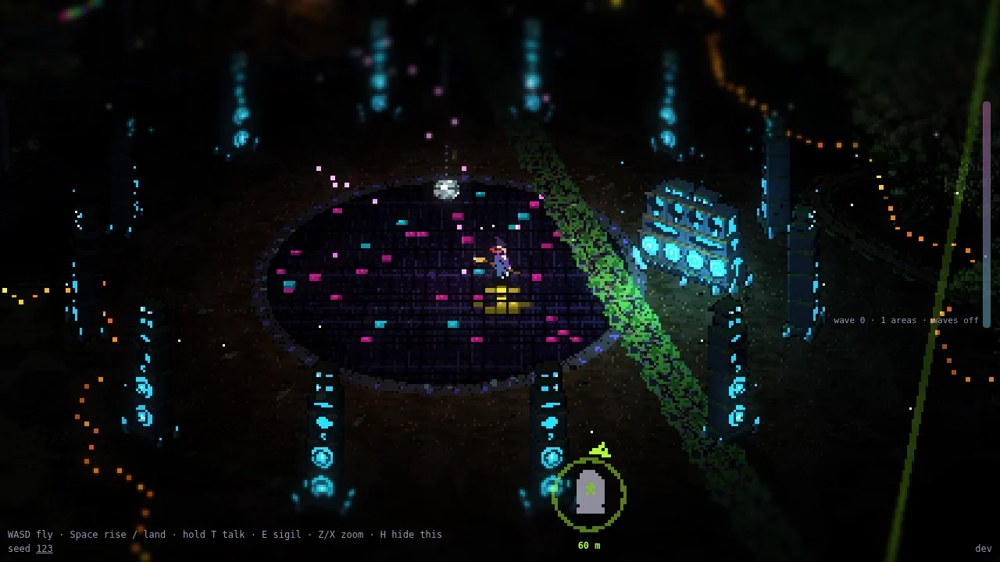

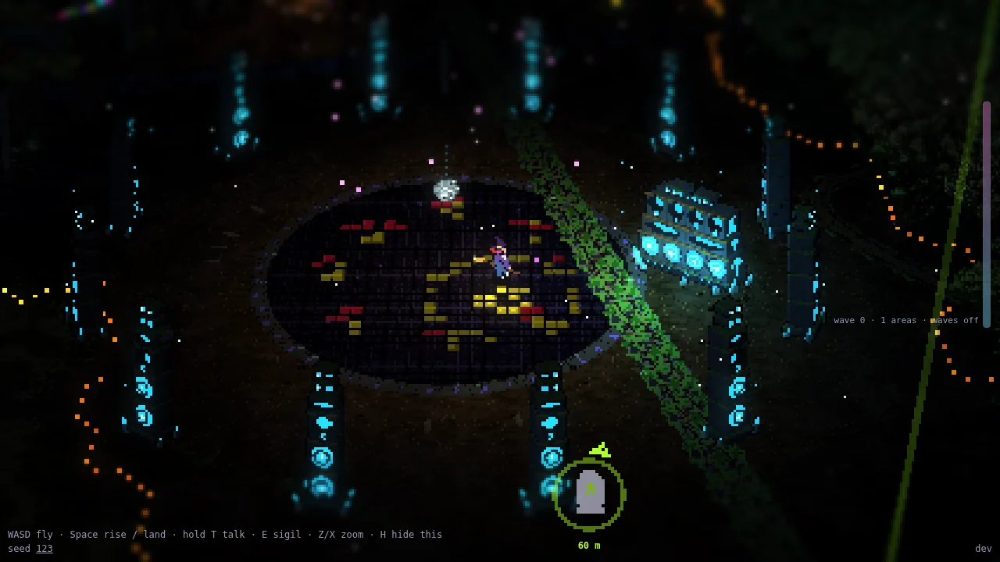

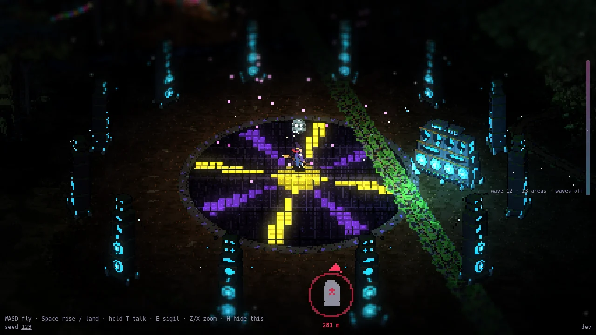